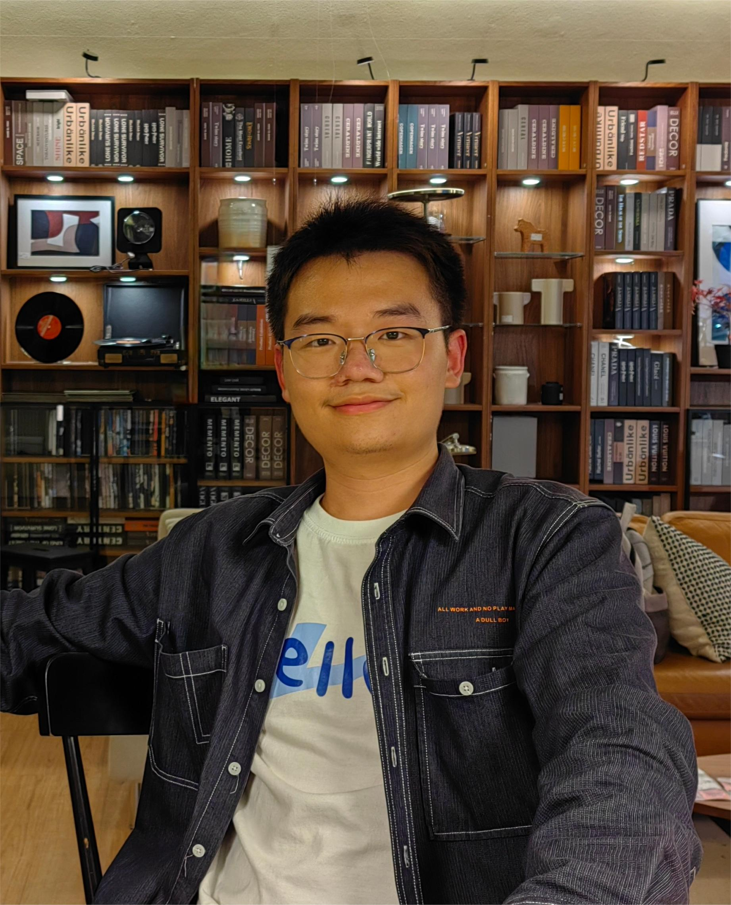

|
Yi Wang 王 祎 Hello! I’m Yi Wang, a master’s student in Computer Science and Technology at Central South University supervised by Prof. Anfeng Liu. Before that, I received my bachelor’s degree in Computer Science and Technology from Central South University. My research focuses on Artificial Intelligence, especially 3D Vision, Multi-Modal Learning, and Human Pose Estimation. |
 |
🔥 News[2024-12] One paper accepted by AAAI 2025 🎉 [2023-12] One paper accepted by AAAI 2024 🎉 |
🚀 Research Projects* denotes equal contribution. |
|
Point Cloud Understanding via Attention-Driven Contrastive Learning
Yi Wang*, Jiaze Wang*, Ziyu Guo, Renrui Zhang, Donghao Zhou, Guangyong Chen, Anfeng Liu, Pheng-Ann Heng. In Submission An attention-driven contrastive learning framework that can be seamlessly integrated into Transformer-based methods to enhance their robustness and generalization capabilities. |
|
|
MM-Mixing: Multi-Modal Mixing Alignment for 3D Understanding
Jiaze Wang*, Yi Wang*, Ziyu Guo, Renrui Zhang, Donghao Zhou, Guangyong Chen, Anfeng Liu, Pheng-Ann Heng. AAAI 2025 MM-Mixing applies mixing-based methods to multi-modal data, preserving and optimizing cross-modal connections while enhancing diversity and improving alignment across modalities. |
|
|
PointPatchMix: Point Cloud Mixing with Patch Scoring
Yi Wang*, Jiaze Wang*, Jinpeng Li, Zixu Zhao, Guangyong Chen, Anfeng Liu, Pheng-Ann Heng. AAAI 2024 A novel approach that mixes point clouds at the patch level and integrates a patch scoring module to generate content-based targets for mixed point clouds. |

🏆 Awards |
|
National Scholarship, 2024. (Top 1%) First-Class Academic Scholarship, CSU, 2024-2025. (Ranked 1st/260) Excellent Student, CSU, 2023-2024. (Top 10%) Excellent Student, Central South University, 2020-2022. (Top 10%) |
🙌 Social ServicesConference ReviewerICLR2025 |
|
Design and source code from Jon Barron's website and Jiaze Wang's website. |